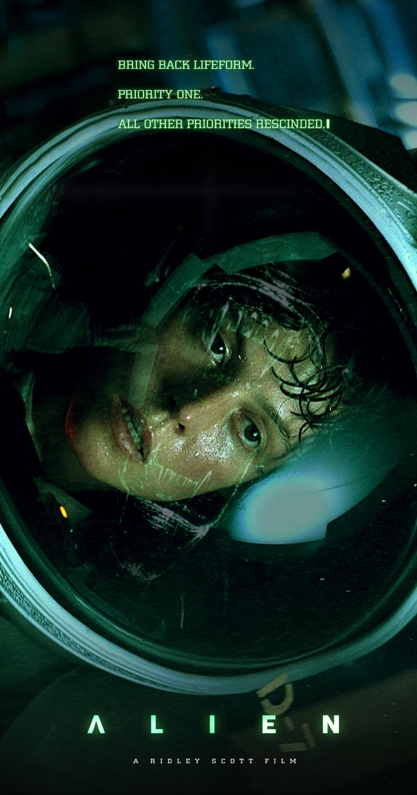

|  | Alien - O 8.º Passageiro
Direção: Ridley Scott
Roteiro Dan O'Bannon, Walter Hill
Elenco: Sigourney Weaver, Tom Skerritt, Veronica Cartwright
Uma nave espacial, ao retornar para Terra, recebe estranhos sinais vindos de um asteroide. Enquanto a equipe investiga o local, um dos tripulantes é atacado por um misterioso ser. O que parecia ser um ataque isolado se transforma em um terror constante, pois o tripulante atacado levou para dentro da nave o embrião de um alienígena, que não para de crescer e tem como meta matar toda a tripulação. |
|
Acesse mais em YouTube SESSÕES
|